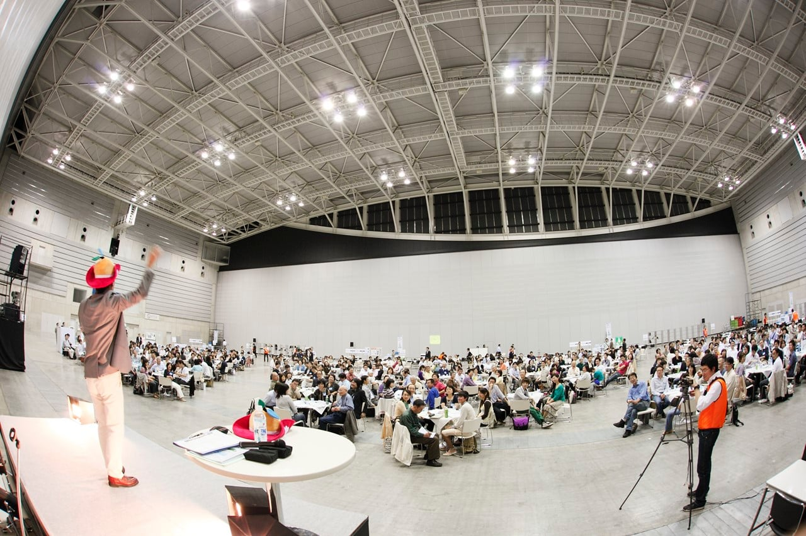
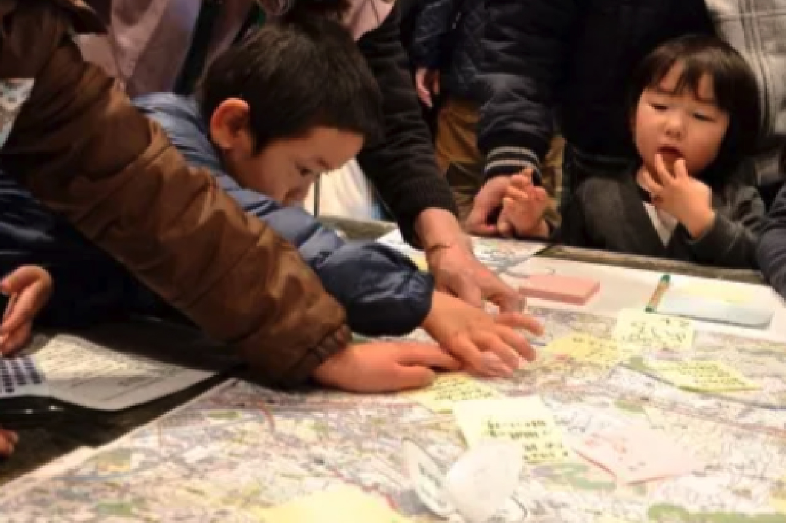
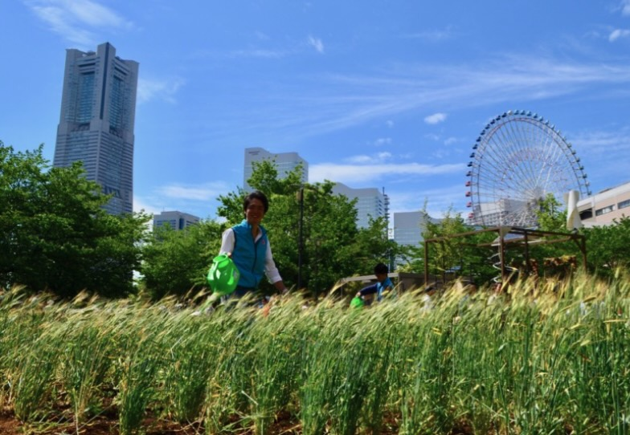

市民が「居心地よい空間」を
自ら獲得するために。
市民が対話を通じて、自ら獲得していくものだ。
デザインは、デザイナー主導から共同設計・参加型デザインへと進化し、 異分野・異なる社会集団をつなぐ「共通の視覚言語」を生む。イシューマッピングや視覚的対話が、 答えのひとつに定まらない地域課題の協働的な解決を促していく。これを都市の文脈に置けば、 「居心地のよい都市空間」もまた、一度の合意で完成するものではない。整え、敷居を下げ、 認知を拡げながら、その「対話の場」に参加できる市民の幅をどう拡げるか──そこに私の仕事がある。
参加には認知の壁があり、集めた声は翻訳されなければ政策に届かず、
成果は発信されなければ次の参加を生まない。
この〈入口・翻訳・出口〉を担うのが、広報・マーケティングである。
> これまでのアクション ── 三つの現場

イマジン・ヨコハマ

横浜消防出初式

みなとみらい麦畑化計画
> これからのアクション ── 考察
対話のデザインがいかに優れていても、
その入口（誰が参加できるか）と出口（成果がどう社会へ還るか）
を設計しなければ、参加は一部の関心層に閉じてしまう。
必要なのは、一度のイベントを盛り上げる広報ではなく、参加と対話を継続させ、成果を可視化して 次へつなぐ「循環」の設計だ。数の多さは、参加の質を保証しない。動員の技術ではない、ということを 現場は繰り返し教えてくれた。
同時に問われるのが包摂である。場の名づけや語り方ひとつで、参加できる市民の幅は大きく変わる。 ターゲットを広げるのではなく、排除されてきた人の参加コストを下げる発想が要る。Papanek が説いた エンパワーメント──利用者が自ら力を持つこと──は、都市においては参加できる市民を増やすことに等しい。 その実装手段こそメディアとマーケティングであり、対話を設計するデザインと補完し合う。 居心地のよい空間を市民自身が獲得していく都市を、その協働で実現する仕事に携わりたい。